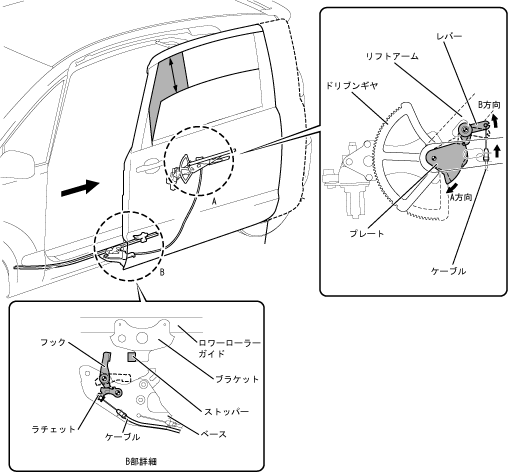

| Intermediate stopper |
| ● |
Sliding door sash center, if the slide door glass is down or higher to prevent the pillar, the hook on the sliding door is operated to stop the sliding door before the full open position.I am.
|
|  |
 Regulation of sliding door manual opening and closing by intermediate stopper Regulation of sliding door manual opening and closing by intermediate stopper
|
| Regulation of power slide doors by intermediate stopper
|